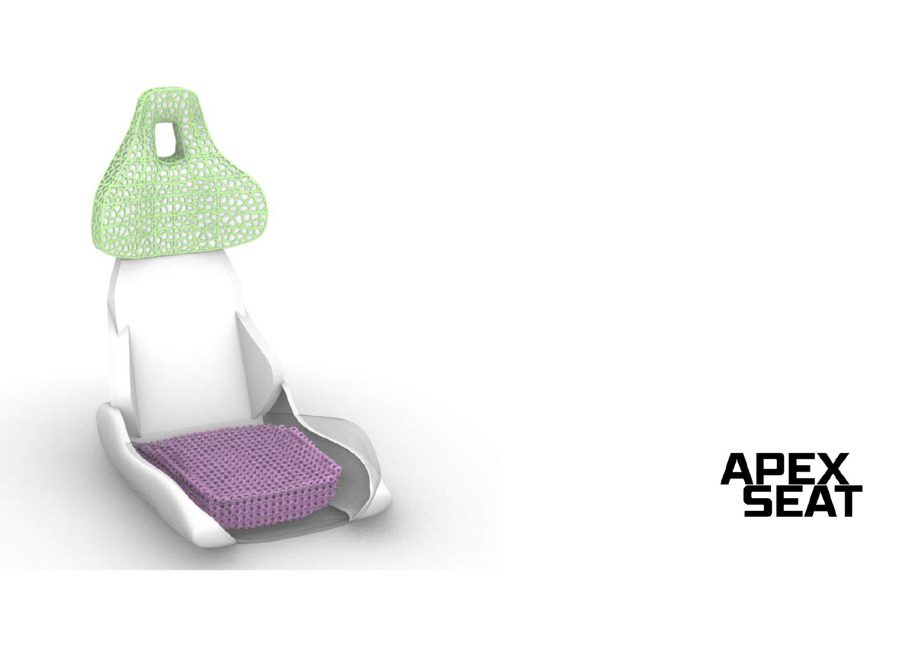
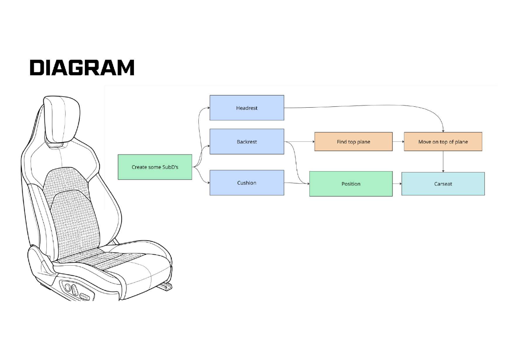
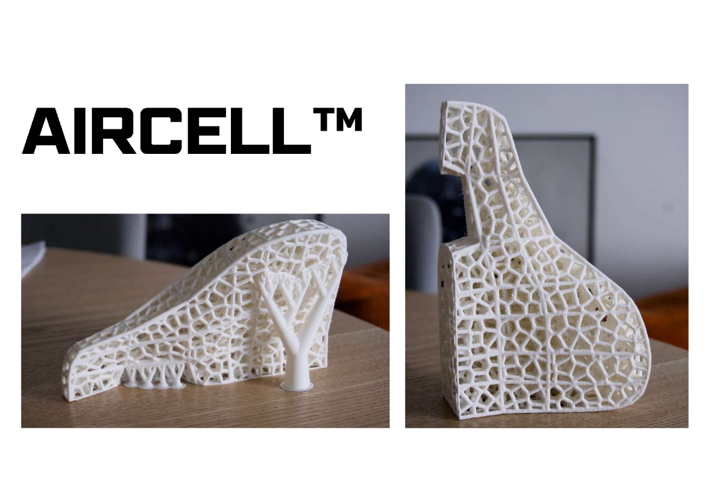

Year 1 · Q4 · Computational Design
Apex
Seat.
A parametric car-seat concept that balances comfort and protection for safe high-performance driving.
Comfort meets
performance.
Apex Seat is a team project developed in the Computational Design course of the Integrated Product Design master's at TU Delft. The brief was to rethink a car seat for high-performance driving without losing the comfort expected in everyday use.
We used computational design to make the seat adaptable: its form, support zones and lattice density can respond to parameters rather than being fixed as a single model.


Built from
adjustable rules.
The Grasshopper workflow separated the headrest, backrest and cushion into controllable sub-designs. This made the final car-seat form easy to evaluate and adapt through its parameters.
Variable lattice structures were developed as advanced 3D-printed materials for comfort and personalisation. Their open cellular geometry creates a visual and functional contrast with the solid seat frame.
What the project
proved.
- A modular parametric model can make an expressive product concept straightforward to adjust and evaluate.
- 3D-printed lattice elements can be integrated as distinct comfort zones in a seat concept.
- The project established a basis for further work on realistic frame connections, simulation testing and geometry stability.